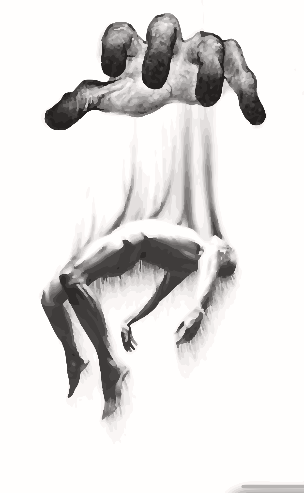
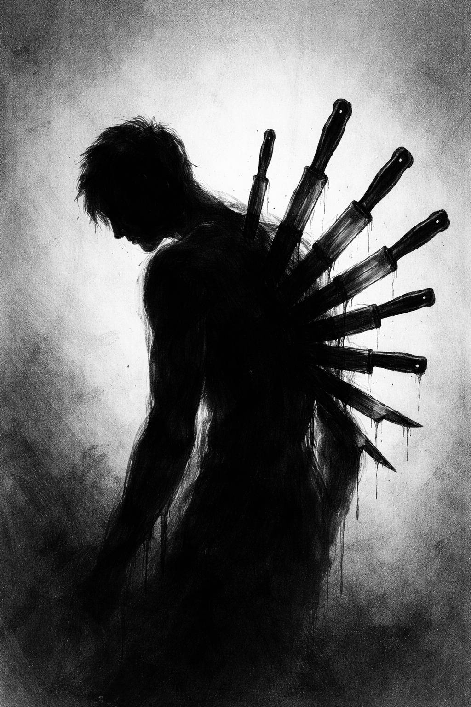
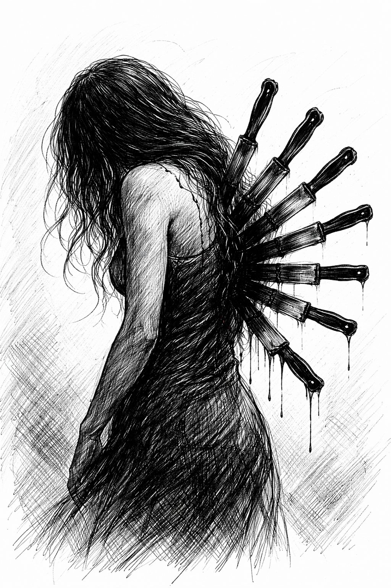
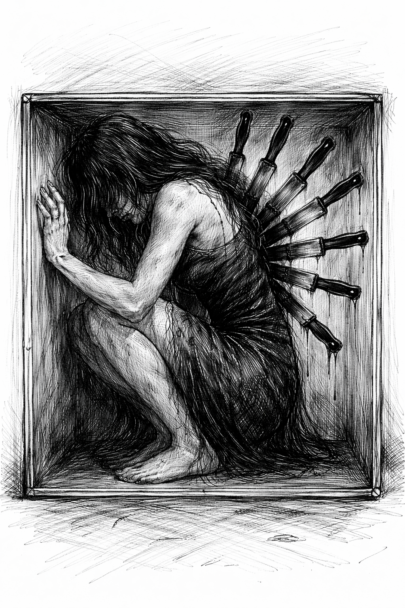
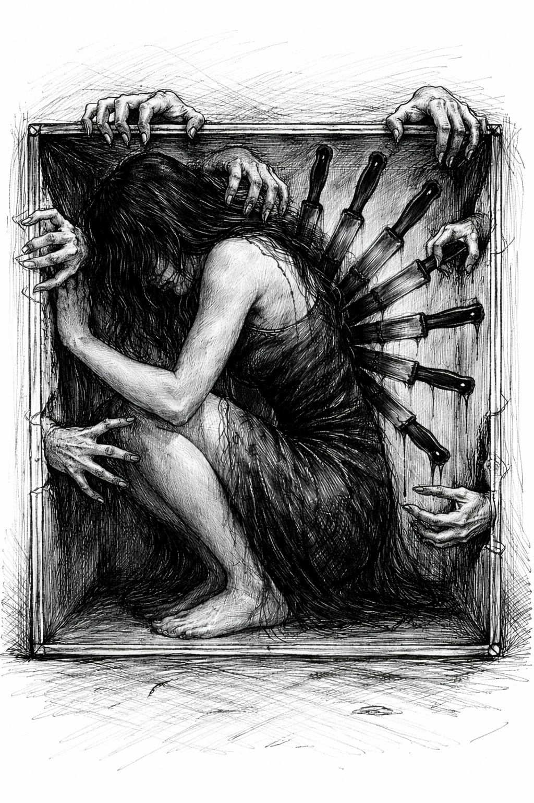

A meditation on grief, the wounds we didn't choose, and the moment we turn around to look.

For years the wound is behind you. Which is to say — it is with you always, and you never once turn around.
You learn to move a certain way. You flinch at sounds you can't name. You feel heavy in rooms that seem light to everyone else. You assume this is who you are. You assume everyone walks like this.
The trauma you inherit doesn't knock. It moves in while you're sleeping and rearranges the furniture before you wake.
The blades are so much a part of you, you mistake their dripping for your own pulse.
What if what you called personality was just the shape your body took around something you never named?

The knowing comes. A document. A phone call. A face across a coffee table. A memory that clicks into place like the last tumbler of a lock you didn't know was on the door.
And suddenly you are small again. The size you were when it happened. The size you were before language. You press your hand against the wall because the wall is the only thing that isn't moving.
You stay here as long as you need to. Grief is not a failure of motion. Grief is the body learning a new operating system while the old one is still running.

They show up when you are most tender. The ones who smelled the wound before you did. The ones with opinions about how you should grieve, how fast, how quietly. The ones who benefit from you staying small.
Some of them mean well. Some of them never did. You learn to tell the difference by what happens in your body when they speak.
A real witness doesn't grab. A real witness sits on the floor of the box with you and doesn't check the time.
You will have to choose, eventually, whose voices to keep and whose to unsubscribe from. This is not cruelty. This is curation. The self is a garden, and grief is when you finally see which plants you never actually wanted.
The knives don't come out all at once.
They come out one name at a time.

And what you'd been calling a burden, you start calling something else.
The blades are still there. You notice they're arranged like wings. You notice they catch the light. You notice that the thing that tried to kill you is now the thing that teaches you to recognize danger from a mile away — that trained your empathy, that sharpened your seeing, that made you the one people come to when their own walls arrive.
You will never be grateful for what happened. You are allowed to never be grateful. But you can be honest: you would not be this person without it. And this person is worth being.

Here is the part no one warns you about: release does not feel like victory. It feels like falling. It feels like being a small thing suspended in a larger hand you cannot see the edges of.
You dissolve a little. You come back more translucent. People will say you look different. They won't be able to say how.
Grief, it turns out, is not something you finish. It's something that finishes arranging you.
The hand that held you was never outside of you. It was the part of you that knew — long before you could articulate it — that you were worth carrying through.
If you're reading this, you've either already turned around, or you're about to. Both are sacred. Neither happens on a timeline anyone else can set.
You were not broken. You were encoded.
Continue to Chapter II · The Rage ◆ All Chapters